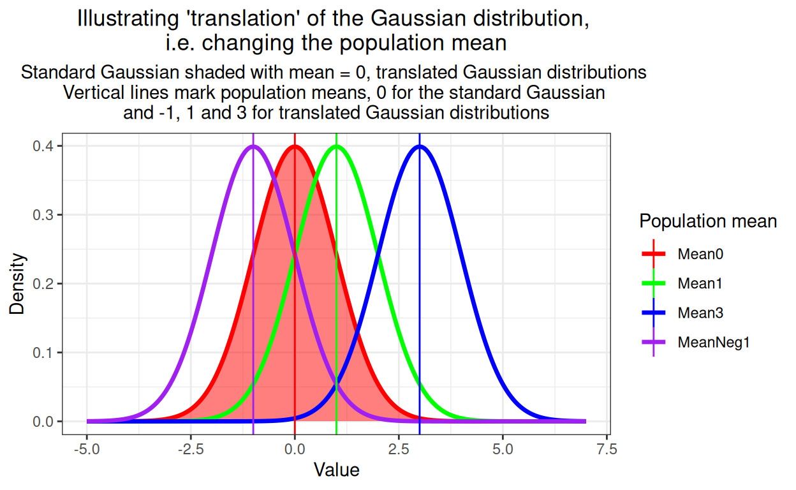
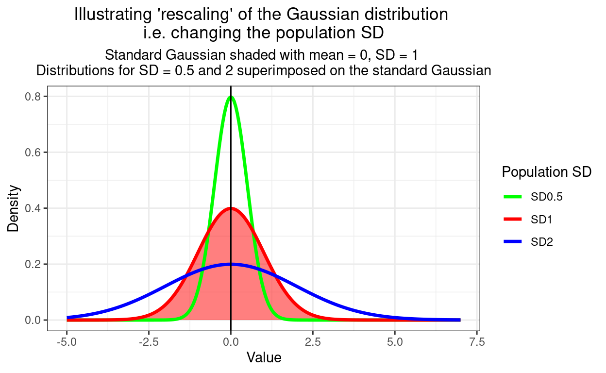
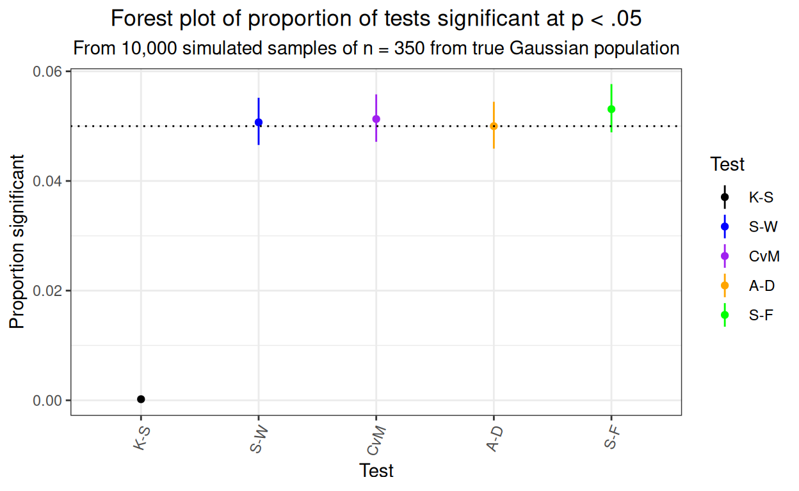
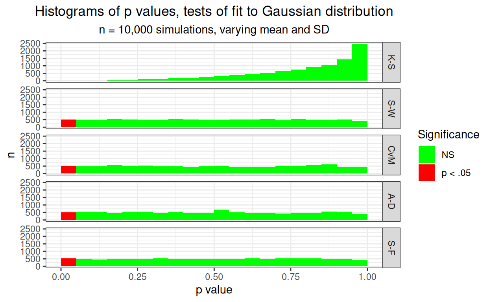
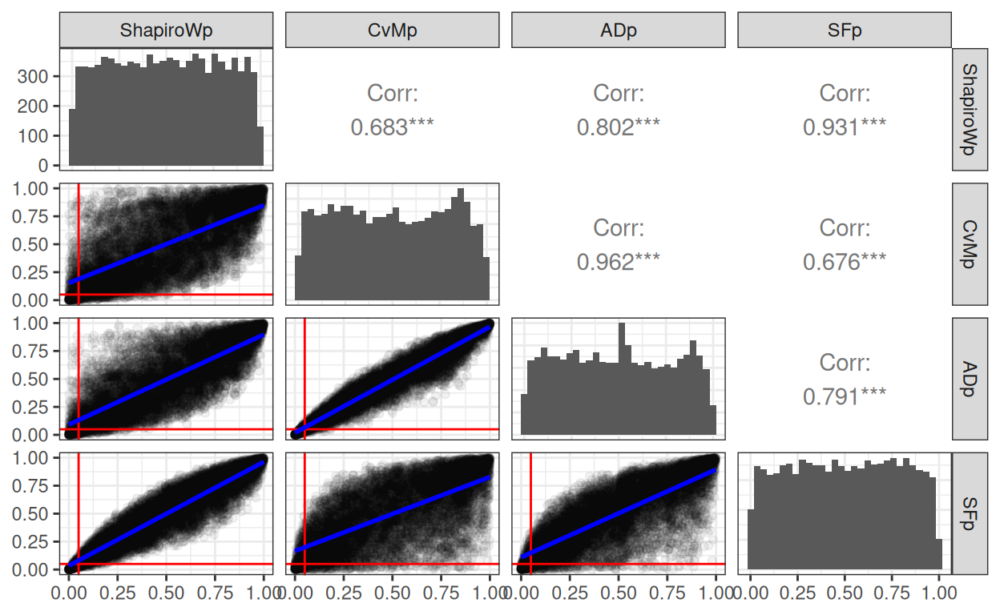
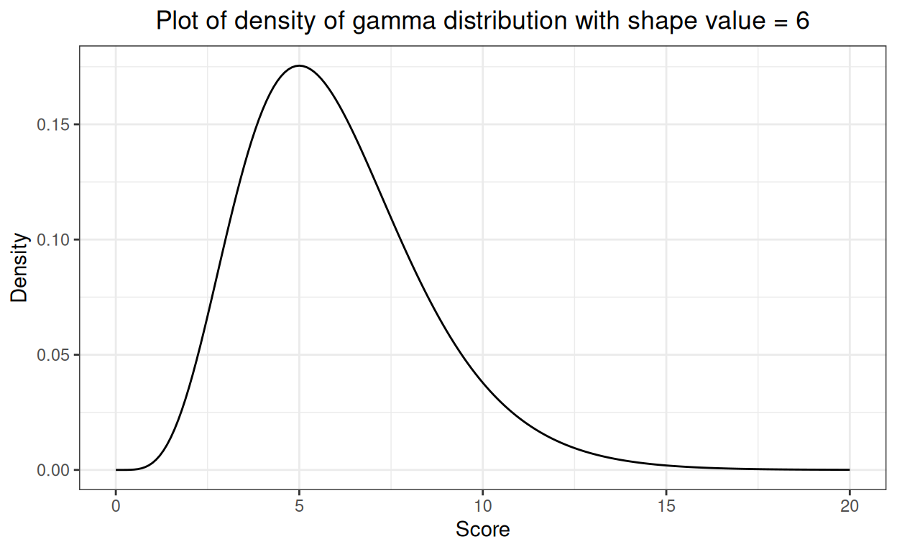
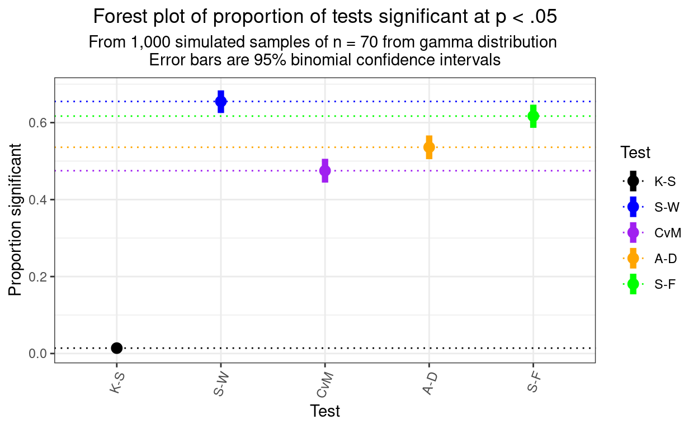
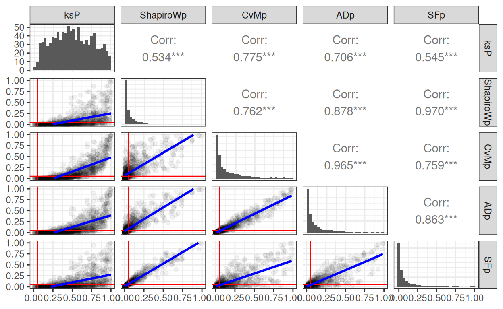

Header graphic for the fun of it!
Show code
### just creating a graphic for the post
### get a tibble with the density of the standard Gaussian distribution from -3 to 3
tibble(x = seq(-3, 3, .05),
y = dnorm(x)) -> tibDnorm
### now generate a tibble of n = 350 sampling from the standard Gaussian distribution
set.seed(12345) # make it replicable
tibble(x = rnorm(350)) -> tibRnorm
# png(file = "KStest.png", type = "cairo", width = 6000, height = 4800, res = 300)
ggplot(data = tibRnorm,
aes(x = x)) +
geom_histogram(aes(x = x,
after_stat(density)),
bins = 20,
alpha = .6) +
geom_line(data = tibDnorm,
inherit.aes = FALSE,
aes(x = x, y = y)) +
geom_vline(xintercept = 0) +
### paramters work for knitted output
annotate("text",
label = "Tests of fit",
x = -2.3,
y = .1,
colour = "red",
size = 26,
angle = 29,
hjust = 0)Show code
# dev.off()
### different sizing to get nice png
# png(file = "fitTests.png", type = "cairo", width = 6000, height = 4800, res = 300)
# ggplot(data = tibRnorm,
# aes(x = x)) +
# geom_histogram(aes(x = x,
# after_stat(density)),
# bins = 20,
# alpha = .6) +
# geom_line(data = tibDnorm,
# inherit.aes = FALSE,
# aes(x = x, y = y)) +
# geom_vline(xintercept = 0) +
# ### changed parameters for the png
# annotate("text",
# label = "Tests of fit",
# x = -2.5,
# y = .1,
# colour = "red",
# size = 100,
# angle = 32,
# hjust = 0)
# dev.off()This follows on from my recent post about the Kolmogorov-Smirnov test. The K-S test is actually not a good test of fit to general Gaussian distribution shape, and that post confirmed that satisfyingly for me as well as explaining the test. The tests I’m putting in here are better. This post leads into one on “Explore distributions with plots](https://www.psyctc.org/Rblog/posts/2023-11-18-explore-distributions-with-plots/). When I can I will also add to a shiny online app to implement these tests in my developing collection of shiny apps. All three posts also expand on entries in my online glossary for the OMbook.
I’m using the same simulated sample as I used in the K-S test post of n = 350 from a standard Gaussian model with population mean zero and SD of 1.0. Those parameters, the mean and the SD, are the two parameters which translate and rescale the standard Gaussian distribution to any of a huge, potentially infinite set of Gaussian distributions. This reality that we want to test for fit to the general Gaussian shape not to the standard Gaussian is the issue that sinks the otherwise rather nice K-S test. So let’s start by showing what is meant by translating Gaussians: changeing their mean, i.e. their central location.
Show code
set.seed(12345)
tibRnorm %>%
mutate(xMean1 = rnorm(350, mean = 1),
xMeanNeg1 = rnorm(350, mean = -1),
xMean3 = rnorm(350, 3)) -> tibRnorms
set.seed(12345)
tibble(x = seq(-5, 7, .05),
Mean0 = dnorm(x, mean = 0),
Mean1 = dnorm(x, mean = 1),
MeanNeg1 = dnorm(x, mean = -1),
Mean3 = dnorm(x, 3)) -> tibDnorms
tibDnorms %>%
pivot_longer(cols = -x, names_to = "popMean") -> tibLongDnorms
tibble(popMean = c("Mean0", "Mean1", "MeanNeg1", "Mean3"),
x = c(0, 1, -1, 3)) -> tmpTibMeans
vecColours <- c("Mean0" = "red",
"Mean1" = "green",
"Mean3" = "blue",
"MeanNeg1" = "purple")
ggplot(data = tibLongDnorms,
aes(x = x, y = value)) +
# geom_point() +
geom_ribbon(data = filter(tibLongDnorms,
popMean == "Mean0"),
aes(ymax = value, ymin = 0),
fill = "red",
alpha = .5) +
geom_line(linewidth = 1.2,
aes(colour = popMean)) +
geom_vline(data = tmpTibMeans,
aes(xintercept = x, colour = popMean)) +
xlab("Value") +
ylab("Density") +
scale_colour_manual("Population mean",
values = vecColours) +
ggtitle(paste("Illustrating 'translation' of the Gaussian distribution,",
"\ni.e. changing the population mean"),
subtitle = paste("Standard Gaussian shaded with mean = 0, translated Gaussian distributions",
"\nVertical lines mark population means, 0 for the standard Gaussian",
"\nand -1, 1 and 3 for translated Gaussian distributions"))
The other issue is rescaling and this shows rescaling, i.e. altering the population SD.
Show code
set.seed(12345)
tibDnorms %>%
mutate(`SD0.5` = dnorm(x, mean = 0, sd = .5),
SD2 = dnorm(x, mean = 0, sd = 2)) -> tibDnorms
tibDnorms %>%
pivot_longer(cols = c(Mean0, `SD0.5`, SD2),
names_to = "popParms") %>%
mutate(popParms = if_else(popParms == "Mean0", "SD1", popParms)) -> tibLongDnorms
vecColours <- c("SD1" = "red",
"SD0.5" = "green",
"SD2" = "blue")
ggplot(data = tibLongDnorms,
aes(x = x, y = value)) +
geom_ribbon(data = filter(tibLongDnorms,
popParms == "SD1"),
aes(ymax = value, ymin = 0),
fill = "red",
alpha = .5) +
geom_line(linewidth = 1.2,
aes(colour = popParms)) +
geom_vline(xintercept = 0) +
xlab("Value") +
ylab("Density") +
guides(fill = "none") +
scale_colour_manual("Population SD",
values = vecColours) +
ggtitle(paste("Illustrating 'rescaling' of the Gaussian distribution",
"\ni.e. changing the population SD"),
subtitle = paste("Standard Gaussian shaded with mean = 0, SD = 1",
"\nDistributions for SD = 0.5 and 2 superimposed on the standard Gaussian"))
Of course, any Gaussian distribution can have mean != 0 and SD != 1 (“!=” is R for “not equal to”), these are “arbitary Gaussian distributions” to my mind. The key point is that they can all transformed by substracting their smaple from each value so their new mean is zero. Then they can be rescaled by dividing the translated scores by the SD of the observed scores so the new SD is 1. For what it’s worth, this is called “standardising” and if you started with a distribution that is Gaussian in shape, you will now have yourself a standard Gaussian distribution. Here’s a silly little example which I hope makes this clear.
Show code
rawValues |
|---|
-6.0898 |
-1.5966 |
0.7325 |
1.5792 |
1.6191 |
2.4535 |
5.9276 |
6.0294 |
6.1505 |
6.5473 |
So there we have ten random numbers that happen to come from a Gaussian distribution. Start by getting the sample statistics.
Show code
sampleMean | sampleSD |
|---|---|
2.3353 | 4.0683 |
OK we can see these don’t come from a standard Gaussian distribution: the mean is well away from zero and the SD is much higher than 4. Let’s start to standardise these data. Start by using the sample mean to get the centred values by subtracting the mean from the observed values.
Show code
rawValues | centredVals |
|---|---|
-6.0898 | -8.4251 |
-1.5966 | -3.9319 |
0.7325 | -1.6028 |
1.5792 | -0.7561 |
1.6191 | -0.7162 |
2.4535 | 0.1182 |
5.9276 | 3.5924 |
6.0294 | 3.6942 |
6.1505 | 3.8152 |
6.5473 | 4.2121 |
Check that mean centring has worked.
Show code
tmpTib %>%
summarise(across(everything(), ~ mean(.x))) %>%
flextable() %>%
colformat_double(digits = 4) %>%
add_header_lines(values = "Mean values") %>%
align(i = 1, align = "center", part = "header")Mean values | |
|---|---|
rawValues | centredVals |
2.3353 | -0.0000 |
It has: the mean of centred values is now zero. However, the SD is not affected by any addition or subtrating of any fixed value so it’s still as it was and not 1.0. So rescale by dividing the centred values by the observed sample SD. (This is the SD based on dividing the deviations from the mean by n - 1, i.e. the unbiased estimate of the population SD.)
Show code
rawValues | centredVals | rescaledVals |
|---|---|---|
-6.0898 | -8.4251 | -2.0709 |
-1.5966 | -3.9319 | -0.9665 |
0.7325 | -1.6028 | -0.3940 |
1.5792 | -0.7561 | -0.1858 |
1.6191 | -0.7162 | -0.1760 |
2.4535 | 0.1182 | 0.0291 |
5.9276 | 3.5924 | 0.8830 |
6.0294 | 3.6942 | 0.9080 |
6.1505 | 3.8152 | 0.9378 |
6.5473 | 4.2121 | 1.0353 |
Check rescaling has fixed the SD to 1.0.
Show code
tmpTib %>%
summarise(across(everything(), ~ sd(.x))) %>%
flextable() %>%
colformat_double(digits = 4) %>%
add_header_lines(values = "SD values") %>%
align(i = 1, align = "center", part = "header")SD values | ||
|---|---|---|
rawValues | centredVals | rescaledVals |
4.0683 | 4.0683 | 1.0000 |
So that has given us rescaled values with mean of zero and SD of 1 as we wanted. Any dataset of numbers can be standardised in this way.
Why the fuss about translating, rescaling and standardising?
If you read the K-S test post you see that the problem with the K-S test is a good test of fit to the standard Gaussian but because it needs an arbitrary distribution to be standardised using the observed mean and SD it is a biased test of fit to the general Gaussian shape because it has to standardise the observed data in order to test what it can: fit to the standard Gaussian distribution. Perhaps surprisingly, using just two “degrees of freedom” in the data by doing this standardisation biases the test as it is bound to improve fit to the standard Gaussian. Hence the simple one sample K-S tends to report more than 95% of actual Gaussian distributions as having a good fit even though the p value criterion (alpha level, false positive rate) was set at .05. Are there better tests? Yes, that’s why I’m ploughing through this: so I understand what they are and how they work. What criteria of fit/misfit they use.
Better tests than the K-S test
I’m not a professional statistician but, as so often, I think the Wikipedia page “Normality test” is good on the general issues but at a fairly geeky level. It leads onto more detail on some of the tests. The ones that R offers that I’m considering here are:
Shapiro-Wilk test:
shapiro.test{stats}, i.e. this is theshapiro.test()function and it’s in the R stats package, one of the default packages in R. Pretty succinct R help is here and more detail is in the Wikipedia page. The test dates from 1965 and involves some maths I don’t really understand!Cramer von Mises test:
cvm.test{nortest}. See the package help here and the seriously deep Wikipedia page. This dates from 1928-30 according to the Wikipedia article. As I understand that and the R help, the criterion of misfit used by the test is a squared difference between the observed, standardised score/value and the expected value for the quantile of the standard Gaussian distribution.Anderson-Darling test:
ad.test{nortest}so provided by the supplementary package “nortest”. See the package help here and the Wikipedia page. The Anderson-Darling test apparently dates from 1952 and is similar to the Cramer von Mises test but, as the Wikipedia page says, the criterion will weight deviations at the tails (towards the minimum and maximum) more heavily than the CvM test will.Shapiro-Francia test:
sftest{nortest}. See the package help here and Wikipedia page. This dates from 1972 and is a bit different from the previous tests and from the K-S test. The Wikipedia page, clearly rightly, describes it as a simplification of the Shapiro-Wilk test and as such I can see that it has some similarities with the CvM and A-D tests too. All of them, unlike the K-S test which looks at the maximum discrepancy between the ecdf and the theoretically predicted cdf of the Gaussian distribution. However, as I understand it, the S-W, CvM and A-D tests all use difference criteria about all deviations between observed and expected cumulative distributions. By contrast, the S-F test looks at the correlation of the ordered scores seen in the empirical data and the typical ordered values you would see if taken a random sample size for from a standard Gaussian distribution: the lower the correlation, the worse the fit and that’s the criterion. As the page says, this is in some ways taking the q-q plot (or qqplot) method of visual inspection of fit to the Gaussian and turns it into a correlation criterion. Neat! (I’ll come to the qqplot in the next post here.)
Unpacking the Shapiro-Francia test
I can implement that in (my crude) R. The Wikipedia page gives the example of having scores of 5.6, -1.2, 7.8 and 3.4, so reordered, of -1.2, 3.4, 5.6 and 7.8. It says that the expected 2nd score if taking four values from the standard Gaussian is -.297.
Show code
vecObs <- sort(c(5.6, -1.2, 7.8, 3.4))
set.seed(12345)
nDraws <- 10000
tibble(drawN = 1:nDraws) %>% # do the following nDraws times
rowwise() %>% # makes sure each draw is independent
### now get the (sorted) samples of size four from the standard Gaussian distribution
mutate(drawVals = list(sort(rnorm(4)))) %>%
### have to manipulate those back to four separate variables
unnest_wider(drawVals, names_sep = "_") %>%
### get their mean values across the nDraws samples
summarise(across(starts_with("draw"), ~ mean(.x))) %>%
### get just them
select(-drawN) %>%
### covert back to a single vector of the means
unlist() -> vecSim
### now get the correlation with the observed values (from Wikipedia's example)
cor(vecObs, vecSim) -> s.fcorrSo I don’t get exactly the same expected score as Wikipedia gives which is not surprising as this is a process involving random samples. I get -0.286 where wikipedia gives -.297 but that’s not too worrying I think. The four such simulated values I got from my 10,000 samples (of size four) from the standard Gaussian distribution were:
-1.021, -0.286, 0.293 and 1.025
and the Pearson correlation of that with the observed values of
-1.2, 3.4, 5.6 and 7.8 was 0.983. That final correlation is the criterion of (actually fit, not misfit) that is used by the S-F test.
So how do these tests compare on Gaussian samples
The bias issue
Let’s create 10,000 samples from distributions that are Gaussian in shape but have mean values greater than zero and SD bigger than 1.0.
Show code
set.seed(12345)
sampN <- 350
nReplicns <- 10000
tibble(replicn = 1:nReplicns,
### now get different mean and SD for each run, none from a standard Gaussian
### chose a mean from a uniform distribution between 1 and 3, i.e. well above zero
popMean = runif(nReplicns, min = 1, max = 3),
### and an SD from a uniform distribution between 2 and 3, well above 1.0
popSD = runif(nReplicns, min = 2, max = 3)) %>%
rowwise() %>% # to get a new sample for each replication
mutate(x = list(rnorm(sampN, mean = popMean, sd = popSD))) %>%
### twist those samples to long format to make these next stages easy to do
### (i.e. this is the tidyverse way of doing things)
unnest_longer(x) %>%
group_by(replicn) %>% # to test each replication
summarise(sampMean = mean(x), # get the sample mean
sampSD = sd(x), # get the sample SD
### now get the univariate K-S test against the standard Gaussian
### with the "$p.value" I am just pulling the p value from the results
ksP = ks.test(x, "pnorm", sampMean, sampSD, alternative = "two.sided")$p.value,
### slightly different approach to get the p values for the new tests
### use tidy{broom} to sweep up all the values from the Shapiro-Wilk test
ShapiroWilk = broom::tidy(stats::shapiro.test(x)),
### same for the Anderson-Darling test and then the CvM and S-F tests
adtest = broom::tidy(nortest::ad.test(x)),
cvmtest = broom::tidy(nortest::cvm.test(x)),
sftest = broom::tidy(nortest::sf.test(x))) %>%
### now unnest the results that tidy{broom} swept into lists:
### first unnest to separate statistics from the htest list that the tests created
unnest(ShapiroWilk) %>%
### I'm only interested in the p value so can dump these variables
select(-c(method, statistic)) %>%
### rename the p value to keep it separate from subsequent ones from the other tests
rename(ShapiroWp = p.value) %>%
### do the same for the Anderson-Darling test and so on ...
unnest(adtest) %>%
select(-c(method, statistic)) %>%
rename(ADp = p.value) %>%
unnest(cvmtest) %>%
select(-c(method, statistic)) %>%
rename(CvMp = p.value) %>%
unnest(sftest) %>%
select(-c(method, statistic)) %>%
rename(SFp = p.value) -> tibAllGaussTests
tibAllGaussTests %>%
### twist to long format to make it easy to get things by test
pivot_longer(cols = ends_with("p"), names_to = "test", values_to = "pValue") %>%
mutate(sig = if_else(pValue < .05, "p < .05", "NS")) -> tmpTib
tmpTib %>%
### group by test
group_by(test) %>%
### and summarise to get rates of statistically significant p values
summarise(n = n(),
nSig = sum(sig == "p < .05")) %>%
rowwise() %>%
### get the binomial 95% CI for the observed rate per test
### binconf{Hmisc} returns a matrix so the "[1, ]" bit just gets
### the first row to make it easy to tidy
mutate(propSig = list(Hmisc::binconf(nSig, n)[1, ])) %>%
### tidy to what we want by unnesting that
unnest_wider(propSig) -> tibSummary
tibSummary %>%
flextable() %>%
### override flextable's default which is to give many significant digits
colformat_double(digits = 3) %>%
autofit()test | n | nSig | PointEst | Lower | Upper |
|---|---|---|---|---|---|
ADp | 10,000 | 500 | 0.050 | 0.046 | 0.054 |
CvMp | 10,000 | 513 | 0.051 | 0.047 | 0.056 |
SFp | 10,000 | 531 | 0.053 | 0.049 | 0.058 |
ShapiroWp | 10,000 | 507 | 0.051 | 0.047 | 0.055 |
ksP | 10,000 | 2 | 0.000 | 0.000 | 0.001 |
That’s pretty nice: across 10,000 simulations the mean rate of false positives for all our new test is close to .05 as it should be and the 95% binomial confidence intervals are all nicely across the .05 rate and fairly tight (as you’d expect from 10,000 simulations). As seen before, the K-S test is terrible with a false positive rate far lower than it should be and way different from that of these new tests. Here’s the same findings as a forest plot. (I do like a plot but here I admit that the table is all that is needed and gives the precise confidence limits and overall rates should anyone want them!)
Show code
tibSummary %>%
### this is just to get the tests sorted into the order I want when plotting
mutate(Test = ordered(test,
levels = c("ksP",
"ShapiroWp",
"CvMp",
"ADp",
"SFp"),
labels = c("K-S",
"S-W",
"CvM",
"A-D",
"S-F"))) -> tibSummary
### great a vector of colours for the tests
vecColours <- c("K-S" = "black",
"S-W" = "blue",
"CvM" = "purple",
"A-D" = "orange",
"S-F" = "green")
### now plot
ggplot(tibSummary,
aes(x = Test, y = PointEst, colour = Test)) +
### points at the observed false positive rates
geom_point() +
### add binomial 95% CI error bars around those rates
geom_linerange(aes(ymin = Lower, ymax = Upper)) +
### horizontal reference line
geom_hline(yintercept = .05,
linetype = 3) +
ylab("Proportion significant") +
scale_colour_manual("Test",
values = vecColours) +
ggtitle("Forest plot of proportion of tests significant at p < .05",
subtitle = "From 10,000 simulated samples of n = 350 from true Gaussian population") +
### I think the labels of the tests on the x axis look better rotated
theme(axis.text.x = element_text(angle = 70, hjust = 1))
For what it’s worth, here’s the distribution of those 10,000 simulation p values for all these tests.
Show code
tibAllGaussTests %>%
select(-starts_with("samp")) %>%
pivot_longer(cols = ends_with("p"),
names_to = "test", values_to = "p") %>%
mutate(Test = ordered(test,
levels = c("ksP",
"ShapiroWp",
"CvMp",
"ADp",
"SFp"),
labels = c("K-S",
"S-W",
"CvM",
"A-D",
"S-F")),
sig = if_else(p < .05, "p < .05", "NS")) -> tibPvaluesLong
vecSigColours <- c("NS" = "green",
"p < .05" = "red")
ggplot(data = tibPvaluesLong,
aes(x = p)) +
### facet the plot by test
facet_grid(rows = vars(Test)) +
geom_histogram(aes(fill = sig),
breaks = seq(0, 1, .05)) +
ylab("n") +
xlab("p value") +
scale_fill_manual("Significance",
values = vecSigColours) +
ggtitle("Histograms of p values, tests of fit to Gaussian distribution",
subtitle = "n = 10,000 simulations, varying mean and SD")
Pretty clear that the K-S test is hopeless with a false positive rate way below .05, that’s what we saw in the Kolmogorov-Smirnov test, what is new here is how well these four other tests are behaving.
How concordant are the p values from these new tests?
Show code
tibAllGaussTests %>%
### get just the p values I want to feed into ggpairs{GGally}
select(ends_with("p")) %>%
# get them in the order I have been using
select(ksP, ShapiroWp, CvMp, ADp, SFp) -> tmpTib
### define a function to replace the default that ggpairs{GGally} would use
lowerFn <- function(data, mapping, method = "lm", ...) {
### create a plot passing through the data, mapping and default smoothing
### the "..." would pass through any additional arguments
p <- ggplot(data = data, mapping = mapping) +
### use a very small alpha (i.e. high transparency)
### as we have 10k points
geom_point(alpha = .05) +
### add reference lines at .05
geom_vline(xintercept = .05,
colour = "red") +
geom_hline(yintercept = .05,
colour = "red") +
### get the smoothed regression, defaults to linear and
### to adding the 95% confidence interval around the line
geom_smooth(method = method, color = "blue", ...) +
### set plot limits
xlim(c(0, 1)) +
ylim(c(0, 1))
### return that plot
p
}
GGally::ggpairs(tmpTib, columns = 2:5,
lower = list(continuous = lowerFn, method = "lm"),
diag = list(continuous = "barDiag"))
That SPLOM (ScatterPLOt Matrix) has the histograms of the p values in the leading diagonal cells, the Pearson correlations in the upper triangle (with rather spurious asterixes for the p value for the correlation, all have three asterixes indicating p < .0005 I suspect). The lower triangle is the really interesting one showing the linear regression of the one set of p values on the other. I’ve marked the p = .05 lines in red. Those blue lines are actually the 95% confidence interval for the linear regression but with n = 10,000 and such strong linear relationships they have collapsed onto the regression lines. However it can be see clearly that though the tests give very strongly correlated and apparently linearly related p values they are clear differences in the pairwise similarities with the Shapiro-Wilk test and the Shapiro-Francia tests highly concordant and the Cramer von Mises and Anderson-Darling tests again very concordant but much less concordance for the other four pairs. This makes sense as the logic, but not the specific criterion tested, of the Shapiro-Wilk and Shapiro-Francia tests are very similar. Likewise the Craner von Mises and Anderson-Darling tests are using a similar logic but with somewhat different weightings.
It can be seen from the red reference lines marking p = .05 and the clear fact that the linear regression lines don’t all go through the origin, that the agreement on classifying these samples as statistically significantly (p < .05) won’t be anything like as high as the correlations of the p values.
This is shown very clearly in this table of the phi correlations values for the p < .05 statistical significance across the tests. Some are really only moderate correlations.
Show code
### function to get 1 for p < .05 and 0 for p >= .05
### makes it easy to use across() in tidyverse pipe below
getSig <- function(x){
if(x < .05) {
return(1)
} else {
return(0)
}
}
### vectorise it as dplyr manipulations of the data are always of
### the full vector of values for the variables
getSig <- Vectorize(getSig)
### just checking:
# getSig(seq(.03, .06, .01))
tibAllGaussTests %>%
select(-ksP) %>%
select(ends_with("p")) %>%
### using across() and the getSig function
mutate(across(everything(), # use all variables
list(sig = getSig), # get the recoding done
### and this renames the results
.names = "{.col}.{.fn}")) %>%
select(ends_with(".sig")) %>%
### turn it into a matrix so can use good old cor() on it
as.matrix() -> tmpMat
### this is a the way in flextable to colour a range of cells by a criterion
### it uses the function col_bin{scales} to convert ranges of numbers, here
### just two ranges, < .7 and >= .7, to the colours to use in flextable
bg_picker <- scales::col_bin(
palette = c("white", "green"), # colours to use
domain = c(0, 1), # range of numbers to remap (here all of them)
bins = c(0, .7, 1)) # create the bins with limits and one cutting point
cor(tmpMat) %>%
as_tibble(rownames = "test") %>%
flextable() %>%
colformat_double(digits = 2) %>% # set digits to show
bg(j = 2:5, bg = bg_picker) %>% # use the colour mapping to create background colours
### and add a footer
add_footer_lines(values = "Phi values > .7 in green") %>%
### and fix the aligment of the text in the footer
align(i = 1, align = "center", part = "footer")test | ShapiroWp.sig | ADp.sig | CvMp.sig | SFp.sig |
|---|---|---|---|---|
ShapiroWp.sig | 1.00 | 0.53 | 0.43 | 0.79 |
ADp.sig | 0.53 | 1.00 | 0.82 | 0.47 |
CvMp.sig | 0.43 | 0.82 | 1.00 | 0.39 |
SFp.sig | 0.79 | 0.47 | 0.39 | 1.00 |
Phi values > .7 in green | ||||
What about samples from a non-Gaussian distribution
This brings us to: what or which non-Gaussian distribution? There are many: all sorts of discontinuous, discontinuous to the point of being very unbalanced binary and a huge set of continuous distributions. I chose to use the gamma distribution as, if you give it a sensible shape parameter it can look a bit like a distribution of questionnaire scores that you might see in real data. Here’s the gamma density for values from zero to 20. It’s bounded, not going to infinity in both directions, it’s obviously skew to the right but it’s fairly smooth and has a single mode.
Show code

What I have done next is to create 1,000 samples of size 70 from that distribution and to look at the proportions of the 1,000 that had statistically significant deviation from a Gaussian shape according to our tests.
Show code
set.seed(12345)
sampN <- 70
nReplicns <- 1000
tibble(replicn = 1:nReplicns) %>%
rowwise() %>% # make sure samples are independent
mutate(x = list(rgamma(sampN, shape = 6))) %>%
unnest_longer(x) %>%
group_by(replicn) %>% # to test each replication
summarise(sampMean = mean(x),
sampSD = sd(x),
ksP = ks.test(x, "pnorm", sampMean, sampSD, alternative = "two.sided")$p.value,
ShapiroWilk = broom::tidy(stats::shapiro.test(x)),
adtest = broom::tidy(nortest::ad.test(x)),
cvmtest = broom::tidy(nortest::cvm.test(x)),
sftest = broom::tidy(nortest::sf.test(x))) %>%
unnest(ShapiroWilk) %>%
select(-c(method, statistic)) %>%
rename(ShapiroWp = p.value) %>%
unnest(adtest) %>%
select(-c(method, statistic)) %>%
rename(ADp = p.value) %>%
unnest(cvmtest) %>%
select(-c(method, statistic)) %>%
rename(CvMp = p.value) %>%
unnest(sftest) %>%
select(-c(method, statistic)) %>%
rename(SFp = p.value) -> tibAllGaussTestsGamma
tibAllGaussTestsGamma %>%
pivot_longer(cols = ends_with("p"), names_to = "test", values_to = "pValue") %>%
mutate(sig = if_else(pValue < .05, "p < .05", "NS")) -> tmpTib
tmpTib %>%
group_by(test) %>%
summarise(n = n(),
nSig = sum(sig == "p < .05")) %>%
rowwise() %>%
mutate(propSig = list(Hmisc::binconf(nSig, n)[1, ])) %>%
unnest_wider(propSig) -> tibSummaryGamma
tibSummaryGamma %>%
flextable() %>%
colformat_double(digits = 3) %>%
autofit()test | n | nSig | PointEst | Lower | Upper |
|---|---|---|---|---|---|
ADp | 1,000 | 536 | 0.536 | 0.505 | 0.567 |
CvMp | 1,000 | 475 | 0.475 | 0.444 | 0.506 |
SFp | 1,000 | 617 | 0.617 | 0.586 | 0.647 |
ShapiroWp | 1,000 | 655 | 0.655 | 0.625 | 0.684 |
ksP | 1,000 | 14 | 0.014 | 0.008 | 0.023 |
Starting at the bottom: the K-S test does very badly so not only is it reporting far fewer statistically significant (false) deviations from Gaussian as shown in the other post but with this sample size it only reported statistically significant deviation from Gaussian for 1.4% of the samples so it is failing in its rate of true positives as well as in its low rate for false positives. By contrast all the other tests reporting statistically significant deviation from Gaussian in 47.5% of samples for the CvM test up to 65.5% for the S-W test.
Show code
tibSummaryGamma %>%
mutate(Test = ordered(test,
levels = c("ksP",
"ShapiroWp",
"CvMp",
"ADp",
"SFp"),
labels = c("K-S",
"S-W",
"CvM",
"A-D",
"S-F"))) -> tibSummaryGamma
ggplot(data = tibSummaryGamma,
aes(x = Test, y = PointEst, colour = Test)) +
geom_point(size = 3) +
geom_linerange(aes(ymin = Lower, ymax = Upper),
linewidth = 2) +
geom_hline(aes(yintercept = PointEst,
colour = Test),
linetype = 3) +
ylab("Proportion significant") +
scale_colour_manual("Test",
values = vecColours) +
ggtitle("Forest plot of proportion of tests significant at p < .05",
subtitle = paste("From 1,000 simulated samples of n = 70 from gamma distribution",
"\nError bars are 95% binomial confidence intervals")) +
### I think the labels of the tests on the x axis look better rotated
theme(axis.text.x = element_text(angle = 70, hjust = 1))
That shows that the detection rates are clearly statistically significantly not only, dramatically, between the K-S test and the other tests, but between each pair of the other four tests with the Shapiro-Wilk test showing the best detection rate.
How do the p values from the different tests agree across samples for this non-null case?
Show code

Unsurprisingly the obvious outlier is the K-S. The other four tests show strong correlations in their p values but with some pairs showing linear regression going through the origin, others not. Here’s the phi agreement between methods in showing statistically significant deviation from Gaussian.
Show code
tibAllGaussTestsGamma %>%
select(ends_with("p")) %>%
mutate(across(everything(), list(sig = getSig), .names = "{.col}.{.fn}")) %>%
select(ends_with(".sig")) %>%
as.matrix() -> tmpMat
# Define colors and ranges
bg_picker <- scales::col_bin(
palette = c("white", "green"),
domain = c(0, 1), # min and max range can be also set dynamically
bins = c(0, .7, 1)) # as well as the bins
cor(tmpMat) %>%
as_tibble(rownames = "test") %>%
flextable() %>%
colformat_double(digits = 2) %>%
bg(j = 2:6, bg = bg_picker) %>%
add_footer_lines(values = "Phi values > .7 in green") %>%
align(i = 1, align = "center", part = "footer")test | ksP.sig | ShapiroWp.sig | ADp.sig | CvMp.sig | SFp.sig |
|---|---|---|---|---|---|
ksP.sig | 1.00 | 0.09 | 0.11 | 0.13 | 0.09 |
ShapiroWp.sig | 0.09 | 1.00 | 0.70 | 0.60 | 0.89 |
ADp.sig | 0.11 | 0.70 | 1.00 | 0.86 | 0.67 |
CvMp.sig | 0.13 | 0.60 | 0.86 | 1.00 | 0.59 |
SFp.sig | 0.09 | 0.89 | 0.67 | 0.59 | 1.00 |
Phi values > .7 in green | |||||
Summary
I have explored what I think are the four main generally agreed to be good tests of fit to the Gaussian distribution.
I think I now have some real grasp of the criteria of misfit they use and how they then allocate p values given that criterion.
Not that it’s new news, this has been explored much more thoroughly by others, but all four tests show appropriate false positive rates testing samples from true population Gaussian distributions of varying means and variances. That is markedly different from the hopeless false positive rate of the K-S test.
Looking at p values for this exploration of samples from true Gaussian population datas the four tests really fall into two groups of two with very similar p values within the pairs but rather different p values and even rather different allocation of samples (falsely) as statistically significantly deviating from Gaussian. The pairs are:
the Shapiro-Wilk and Shapiro-Francia tests and
the Cramer von Mises and Anderson-Darling tests
Using the tests with samples from a non-Gaussian distribution showed that all the four new tests markedly outperformed the K-S test but also that with the precision of estimation from 1,000 replications, there were clear differences between the new tests with the Shapiro-Wilk test showing the best detection rate. This is congruent with summaries of much more extensive simulation and testing of the tests summarised in the R nortest package help files and on Wikipedia. However, as noted in those summaries, this superiority of the S-W test won’t apply for all non-Gaussian distributions as the criteria of misfit and the ways of testing the criteria vary between the tests and will function differently with samples from differently non-Gaussian populations.
Related resources
Local shiny app(s)
- App creating samples from Gaussian distribution showing histogram, ecdf and qqplot
Show code
### this is just the code that creates the "copy to clipboard" function in the code blocks
htmltools::tagList(
xaringanExtra::use_clipboard(
button_text = "<i class=\"fa fa-clone fa-2x\" style=\"color: #301e64\"></i>",
success_text = "<i class=\"fa fa-check fa-2x\" style=\"color: #90BE6D\"></i>",
error_text = "<i class=\"fa fa-times fa-2x\" style=\"color: #F94144\"></i>"
),
rmarkdown::html_dependency_font_awesome()
)Last updated
04/12/2024 at 11:53- 4.xii.24: Removed duplicated “Last updated” block
website counters